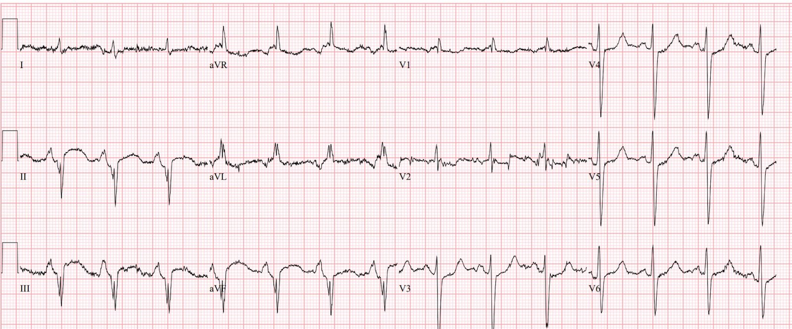
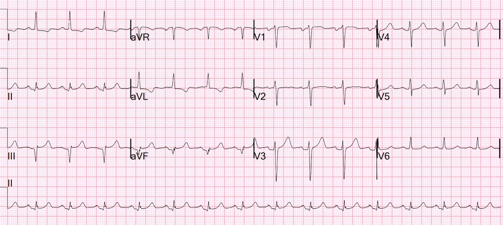
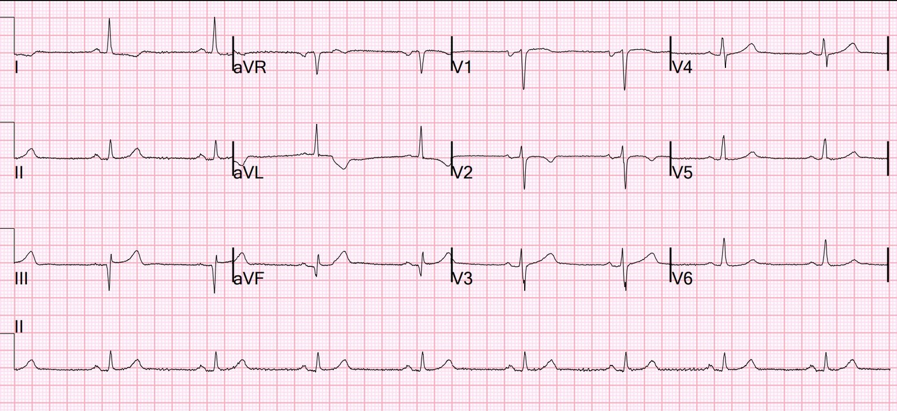
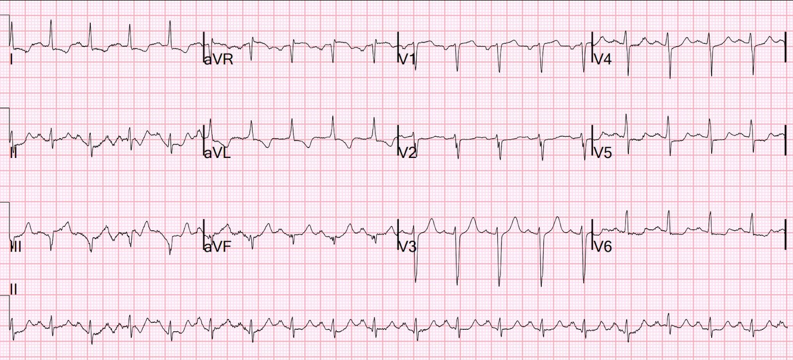
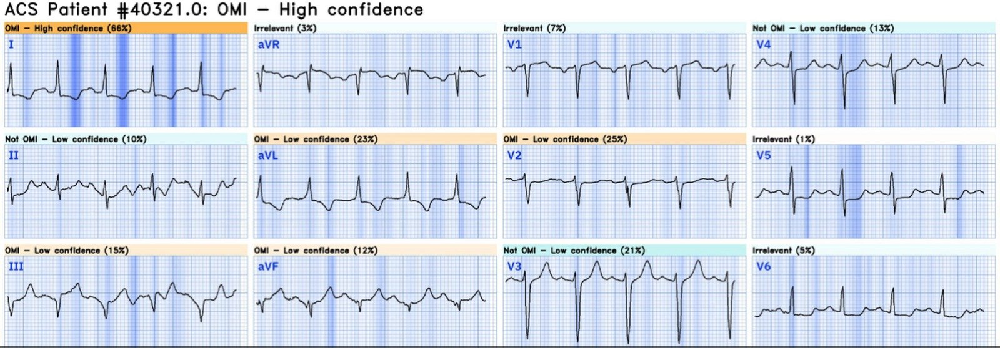
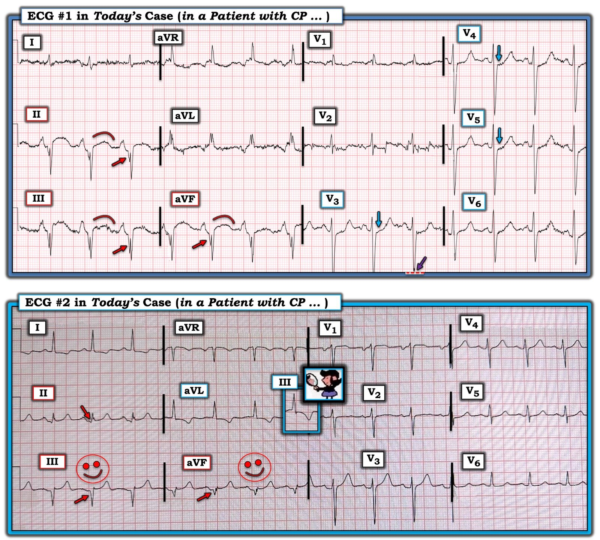

30/07/2024 — Bạn nghĩ gì về 2 điện tâm đồ này ở các bệnh nhân đau ngực? Tiếp cận chúng như thế nào?
Bản dịch tiếng Việt của bài "What do you think of these 2 ECGs in patients with chest pain? How to approach these?" – Dr. Smith’s ECG Blog. Giữ nguyên toàn bộ 7 hình ảnh của bản gốc.
Bạn nghĩ gì về 2 điện tâm đồ này ở các bệnh nhân đau ngực? Tiếp cận chúng như thế nào?
Điện tâm đồ 1 (do Sam Ghali @EM_resus gửi cho tôi)


Điện tâm đồ 2


Điện tâm đồ 1
Điện tâm đồ này được gửi cho tôi mà không kèm thông tin lâm sàng nào, chỉ có câu hỏi “bạn nghĩ sao?”
Câu trả lời của tôi là: “nhịp xoang kèm lớn nhĩ phải, có thể phì đại thất phải, và nhồi máu cơ tim thành dưới cũ kèm phình thất trái thành dưới.” Sóng T đảo ngược ở I và aVL là thay đổi soi gương (reciprocal) của túi phình thành dưới cũ.
Sau khi tôi gửi câu trả lời, tôi nhận được bệnh sử này:
Nam 66 tuổi đến viện vì đau ngực
Tiền sử bệnh mạch vành (CAD) [chi tiết không rõ, điều trị ở bang khác, đã đặt stent?]
Đã báo động STEMI từ trước viện
Phát hiện lactat tăng rất cao
Tổn thương thận cấp (AKI) đáng kể
Huyết khối động mạch chủ (mạn tính) trên CT
hS Trop T: 1609->2471->1929 ng/L
Khoa tim mạch dự định thông tim khi tình trạng chuyển hóa ổn định
Chụp mạch vành: không có tổn thương thủ phạm và tất cả các động mạch đều thông.
Chẩn đoán cuối cùng: nhồi máu cơ tim típ II do bệnh lý toàn thân
Queen of Hearts kết luận “OMI với độ tin cậy trung bình.” Phiên bản 1 của Queen chưa nhận diện tốt hình thái phình thất trái, dù là thành trước (với chuyên gia thì không quá khó vì gần như luôn có sóng QS) hay thành dưới (ngay cả với tôi cũng rất khó trong phần lớn trường hợp, vì phình thành dưới thường có sóng QR)
Tiếp cận thế nào? – khi chẩn đoán có thể là “ST chênh lên do nhồi máu cơ tim cũ” hoặc “hình thái phình thất trái”, điều thiết yếu là xem lại hồ sơ cũ và các điện tâm đồ cũ, nếu có. Cũng thiết yếu là đánh giá các nguyên nhân khác của triệu chứng, và trong ca này bệnh nhân có rối loạn sinh lý, với lactat tăng và tổn thương thận cấp. Điều này hướng tới một nguyên nhân khởi phát khác, chứ không phải hội chứng vành cấp (ACS) là động lực chính.
Những rối loạn sinh lý này không loại trừ ACS, nhưng làm cho khả năng bệnh của bệnh nhân được khởi phát bởi một yếu tố khác cao hơn nhiều.
Điện tâm đồ 2
Tôi đang đọc điện tâm đồ trên hệ thống thì gặp điện tâm đồ 2 và buột miệng nói: “Đây là giả.” Một đồng nghiệp ngồi cạnh hỏi “tại sao?”, và tôi trả lời rằng có hình “yên ngựa” (saddleback) ở chuyển đạo III và sóng Q đã hình thành rõ. ST chênh lên hình yên ngựa hiếm khi do OMI.
Tuy nhiên, trong rất ít trường hợp, ST chênh lên hình yên ngựa thực sự là do OMI.
Queen of Hearts đã kết luận “Không phải OMI, với độ tin cậy thấp”
Có một điện tâm đồ trước đó:


Điện tâm đồ này xác nhận nhận định của tôi.
Về sau tôi mới biết bệnh nhân đã được đưa vào phòng thông tim. Và tôi biết rằng việc kích hoạt phòng thông tim là do điện tâm đồ theo dõi này:


Tôi thấy đây là một điện tâm đồ âm tính, ngoại trừ việc giờ đây có ST chênh xuống mới ở V4-V6.
Tuy nhiên, có nhịp nhanh mới, và ST chênh xuống mới đó có thể là hậu quả của thiếu máu cục bộ do mất cân bằng cung-cầu vì nhịp nhanh.
Lần này, Queen of Hearts chẩn đoán đây là “OMI với độ tin cậy cao.”


Kết quả đọc này của Queen đã dẫn đến một lần kích hoạt phòng thông tim dương tính giả.
Cách xử trí khác: Luôn xem hồ sơ bệnh án của bệnh nhân!! (kể cả điện tâm đồ cũ ở trên, vốn đã không được xem)
Thực tế, tôi phát hiện mình đã từng viết blog về bệnh nhân này trước đây (!!!) vì điện tâm đồ trông giống phình thành dưới. Có nhiều điện tâm đồ tương tự trước đó. Đây là bài viết đó:
A Patient with Vertigo (Một bệnh nhân bị chóng mặt)
Chụp mạch vành 3 tháng trước:
Bệnh ba nhánh mạch vành tự nhiên nặng, tắc đoạn giữa Cx, đoạn giữa LAD và đoạn giữa RCA, kèm nhiều vùng hẹp hoặc tắc trong stent. 4/4 cầu nối còn thông (RIMA > dLAD, LIMA > OM, SVG > rPDA, và động mạch quay tự do > rPLA1) kèm hẹp nặng mạch tự nhiên ngay sau miệng nối ở dLAD, OM và rPDA
Tiền sử bệnh mạch vành và tiền sử phẫu thuật bắc cầu chủ vành (CABG) cho bạn biết rằng có lẽ có một ổ nhồi máu cũ, rằng điện tâm đồ nền nhiều khả năng bất thường, và rằng bạn nên đọc điện tâm đồ hiện tại trong bối cảnh đó.
Siêu âm tim trước đó:
Kích thước buồng thất trái bình thường, bề dày thành tăng nhẹ và rối loạn chức năng tâm thu thất trái mức độ trung bình.
Thất trái có phân suất tống máu ước tính là 35-40 %.
Rối loạn vận động thành khu trú - thành dưới đoạn đáy vô động.
Rối loạn vận động thành khu trú - thành dưới-bên đoạn đáy, vô động.
Rối loạn vận động thành khu trú - mỏm, vùng nhỏ.
Một thành vô động có thể có cùng hình thái “phình thất trái” như một thành loạn động (“loạn động thì tâm trương” là định nghĩa phình thất trên siêu âm tim.)
Phòng thông tim đã được kích hoạt và không có OMI cấp. Dương tính giả.
Bàn luận:
Đây là những ca rất phức tạp, có thể là OMI hoặc có thể là nhồi máu cơ tim cũ. Đây là loại ca mà bạn nên hội chẩn với bác sĩ tim mạch thân thiện của mình và cùng thảo luận. Nhưng điều đó chỉ khả thi nếu các bác sĩ tim mạch của bạn chấp nhận khái niệm OMI (tắc mạch vành cấp khi không có tiêu chuẩn ST chênh lên). Để hội chẩn như vậy, phải có sự tin tưởng lẫn nhau rằng bác sĩ hội chẩn sẽ không gạt bỏ mối lo ngại của bạn hay nói “Không, không thể nào.”
Có thể mất nhiều năm để xây dựng được sự tin tưởng như vậy.

===================================
BÌNH LUẬN CỦA TÔI, bởi KEN GRAUER, MD (30/7/2024):
===================================
“Chủ đề” của Bình luận của tôi trong ca hôm nay là — Hình dạng là MẤU CHỐT!
- Để rõ ràng và dễ so sánh, trong Hình 1 — tôi đã đánh nhãn và đặt cạnh nhau 2 điện tâm đồ ban đầu của ca hôm nay.
SUY NGHĨ CỦA TÔI về điện tâm đồ #1:
Đây là một bản ghi phức tạp. Tôi thấy những điểm sau:
- Có nhiễu đường nền đáng kể. Điều này có liên quan đến việc diễn giải của chúng ta, vì nó gây khó khăn cho việc đánh giá thay đổi ST-T ở nhiều chuyển đạo.
- Dù vậy — nhịp rõ ràng là nhịp xoang với khoảng PR bình thường.
- Hình thái QRS không bình thường. Dù vậy — QRS thực sự không rộng (tức là, không quá 0.10 giây). Với phức bộ QRS dương hoàn toàn ở chuyển đạo V1, cùng sóng S tận hẹp nhưng rõ ràng ở các chuyển đạo bên I và V6 — hình thái QRS này phù hợp với IRBBB (Incomplete Right Bundle Branch Block – blốc nhánh phải không hoàn toàn).
- QTc kéo dài (tôi đo QT khoảng ~0.44 giây — hiệu chỉnh theo tần số ~80/phút, ra QTc ~0.49 giây).
- Có LAD (Left Axis Deviation – trục lệch trái) rõ rệt — với phức bộ QRS âm hoàn toàn ở mỗi chuyển đạo dưới. Điều này phù hợp với LAHB (Left Anterior HemiBlock – blốc phân nhánh trái trước).
- Có RAA (Right Atrial Abnormality – bất thường nhĩ phải) — xác định dựa trên sự hiện diện của sóng P cao, nhọn và đỉnh nhọn ở các chuyển đạo dưới (tức là, sóng P biên độ ≥2.5 mm).
- Có thể có RVH (Right Ventricular Hypertrophy – phì đại thất phải) — điều luôn cần được xem xét nếu thực sự có lớn nhĩ phải. Vì có nhiễu — chúng ta không thể biết hình thái QRS ở chuyển đạo V1 là ba pha (rsR’) hay là dạng qR, vốn có thể phù hợp với tăng áp phổi (để biết thêm về RAA, RVH — xem Bình luận của tôi trong bài ngày 12 tháng Hai năm 2023).
- Có thể có LVH theo tiêu chuẩn Peguero (xem Bình luận của tôi trong bài ngày 20 tháng Sáu năm 2020) — như gợi ý bởi sóng S rất sâu ở chuyển đạo V3 và V4 (với mũi tên TÍM ở chuyển đạo V3 cho thấy biên độ sóng S bị cắt cụt ở chuyển đạo này).
Về Thay đổi Q–R–S–T:
- Không chỉ có sóng Q ở thành dưới — còn có phân mảnh rõ rệt trên mỗi sườn xuống của sóng S ở các chuyển đạo dưới (các mũi tên ĐỎ ở những chuyển đạo này). Chính vì sự phân mảnh rõ rệt này mà “nỗ lực” tạo thành một sóng dương ở mỗi chuyển đạo dưới không bao giờ trở về được đường nền trước khi bị lấn át bởi phần âm tiếp diễn của sóng S. Theo kinh nghiệm của tôi — hình dạng QRS phân mảnh này ở bất kỳ một (chưa nói đến cả 3) chuyển đạo dưới nào cũng gợi ý mạnh nhồi máu thành dưới vào một thời điểm nào đó.
- Về tăng tiến sóng R — tôi diễn giải phức bộ dương có vẻ nhiều pha ở chuyển đạo V1 là hậu quả của IRBBB chứ không phải RVH vì: i) Có LAD rõ rệt với sóng S ở chuyển đạo I sâu không quá mức vừa phải; và, ii) tôi thấy bức tranh điện tâm đồ tổng thể gợi ý bệnh mạch vành hơn là RVH. Tuy vậy, phần dương ưu thế không bao giờ xuất hiện ở các chuyển đạo trước tim bên — và tôi không thể loại trừ khả năng RVH chỉ dựa trên điện tâm đồ này.
- Hình dạng của các đoạn S-T ở các chuyển đạo dưới có dạng vòm (coving), thời gian tương đối dài, và ST chênh lên nhẹ. Hình dạng này tạo thành một “hình ảnh cần ghi nhớ” — không trông cấp tính. Việc hình ảnh ST-T ở chuyển đạo dưới này khó có khả năng cấp tính — còn được ủng hộ thêm bởi việc không có ST chênh xuống soi gương ở các chuyển đạo bên cao I và aVL. Thay vào đó (theo Dr. Smith) — “hình ảnh” này gợi ý mạnh phình thành dưới, đặc biệt khi có dấu hiệu phân mảnh sóng S ở chuyển đạo dưới của nhồi máu thành dưới cũ đã mô tả ở trên.
- Cuối cùng — có ST thẳng đuỗn và chênh xuống bắt đầu từ chuyển đạo V3, vượt quá mức dự kiến đối với IRBBB đơn thuần (các mũi tên XANH LAM ở các chuyển đạo trước tim).
ĐIỀU CỐT LÕI: Giống như Dr. Smith — với một điện tâm đồ đơn lẻ mà tôi diễn giải khi chỉ biết bệnh nhân bị “đau ngực” — tôi thấy điện tâm đồ #1 không trông cấp tính. Nhưng có nhiều điểm phức tạp đòi hỏi phải giải thích thêm.
- Tôi nghi ngờ nhồi máu cơ tim thành dưới cũ kèm IRBBB/LAHB — và nay kèm phình thành dưới. Có ST chênh xuống ở các chuyển đạo V3 đến V5 mà tôi nghĩ nhiều khả năng phản ánh bệnh nhiều nhánh mạch vành — nhưng cần giải thích lý do của RAA, LVH có khả năng, và RVH có thể có. Nhưng – không phải OMI.
- Theo Dr. Smith — bệnh nhân này hóa ra có troponin tăng do nhồi máu cơ tim típ 2 (mạch vành sạch khi thông tim). Thay vào đó — bệnh cảnh lâm sàng của ông bị chi phối bởi suy thận cấp kèm toan máu nặng. Chúng ta còn lại nhiều câu hỏi hơn câu trả lời (tức là, Bệnh mạch vành nền của ông nặng đến mức nào? Có RVH hay tăng áp phổi không?) — nhưng đây không phải là điện tâm đồ của tắc mạch vành cấp.
- LƯU Ý cá nhân: Tôi đã hơn một lần bị đánh lừa bởi đau ngực trong bối cảnh bệnh nền nặng (tức là, toan máu, nhiễm khuẩn huyết). MẤU CHỐT là nhận ra rằng điện tâm đồ #1 khó có khả năng biểu hiện một OMI cấp — với ưu tiên lâm sàng là điều trị các bệnh lý nền, rồi đánh giá lại triệu chứng và ghi lại điện tâm đồ khi cần.


SUY NGHĨ CỦA TÔI về điện tâm đồ #2:
Tôi thấy bản ghi thứ 2 của ca hôm nay dễ diễn giải hơn — ở chỗ có ít dấu hiệu gây phức tạp hơn nhiều.
- Nhịp xoang — với các khoảng bình thường (PR-QRS-QTc). Có LAD (QRS âm ở chuyển đạo aVF) — nhưng trục chưa lệch trái đủ để đạt tiêu chuẩn LAHB (dương ưu thế ở chuyển đạo II).
- Không có lớn buồng tim.
Về Thay đổi Q–R–S–T:
- Có sóng Q rất lớn và rộng ở chuyển đạo III và aVF — cùng một sóng Q nhỏ nhưng hiện diện ở chuyển đạo II (các mũi tên ĐỎ ở những chuyển đạo này). Bệnh nhân này đã bị nhồi máu thành dưới vào một thời điểm nào đó.
- Tăng tiến sóng R cho thấy vùng chuyển tiếp hơi muộn (sóng R chỉ trở nên cao hơn độ sâu sóng S ở giữa chuyển đạo V4 và V5).
- S–T chênh lên có xuất hiện ở mỗi chuyển đạo dưới, theo sau là sóng T dương nổi bật. Dù vậy — hình dạng của các đoạn ST chênh lên ở chuyển đạo dưới biểu hiện dạng lõm hướng lên (tức là, hình dạng “mặt cười”). Theo Dr. Smith — hình dạng này ít có khả năng biểu hiện một biến cố tim cấp.
- Mặc dù cả hai chuyển đạo bên cao ( = chuyển đạo I và aVL) đều có ST chênh xuống — hình ảnh ST-T đối xứng soi gương chính xác với chuyển đạo III — được thấy ở chuyển đạo aVL (trong hình chữ nhật XANH LAM, trong đó tôi chỉ lật ngược một phức bộ QRST từ chuyển đạo III). Với tôi, điều này gợi ý mức độ cấp tính tương tự (hoặc sự thiếu cấp tính) cho cả chuyển đạo aVL lẫn các chuyển đạo dưới.
- Có ST-T dẹt nhẹ, không đặc hiệu ở các chuyển đạo V1,V2 và V6.
ĐIỀU CỐT LÕI: Một lần nữa, với một điện tâm đồ đơn lẻ mà tôi diễn giải khi chỉ biết bệnh nhân bị “đau ngực” — tôi thấy điện tâm đồ #2 không trông cấp tính.
- Sóng Q sâu, rộng ở chuyển đạo III và aVF (cùng sóng Q nhỏ nhưng hiện diện ở chuyển đạo II) — gợi ý mạnh nhồi máu cũ. Bệnh nhân này gần như chắc chắn có bệnh mạch vành nền. Về lâm sàng, nếu tôi xử trí bệnh nhân này — rõ ràng cần thêm thông tin (tức là, chi tiết bệnh sử; ghi lại điện tâm đồ; troponin; so sánh với các bản ghi trước, v.v.). Nhưng với một điện tâm đồ đơn lẻ không có thêm thông tin — hình dạng của các đoạn ST ở chuyển đạo dưới này — và việc ở các chuyển đạo trước tim không có bất kỳ gợi ý nào về tổn thương thành sau cấp kèm theo — gợi ý rằng đây không phải là hậu quả của tắc mạch vành cấp.
- Theo Dr. Smith — việc xem lại hồ sơ bệnh án của bệnh nhân này đã nói lên tất cả. Không có gì ngạc nhiên — bệnh nhân có bệnh mạch vành nền rất nặng — nhưng không có OMI cấp.